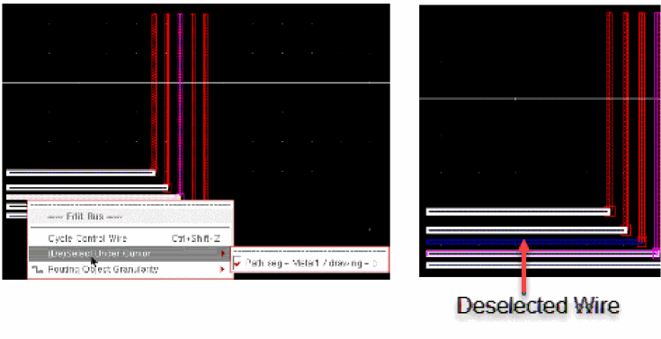

Edit Bus Shortcut Menu Commands
Selecting and right-clicking the bus in the design canvas when the Edit – Wiring – Bus command is active displays Edit Bus shortcut menu commands.
| Field | Description |
|---|---|
|
Changes the control wire of the selected part of a bus. For example, if there are 5 wires selected in a bus, the control wire moves from top to bottom and then to centre. This means using the Cycle Control Wire option in the Edit Bus context-sensitive menu, you can select only the top, bottom, and the centre wire as the control wire. The second and fourth wire will never be selected as the control wire. To set the second or fourth wire as a control wire, click the corresponding net name in the Wire Assistant Bus Bit table. For more information, refer to Using the Control Wire. |
|
|
Selects or deselects the wire(s) on which the mouse cursor exists as shown in the following figure.

|
|
|
Helps select routing objects by automatically expanding the selection based on the modes. For more information on modes, refer to |
Return to top